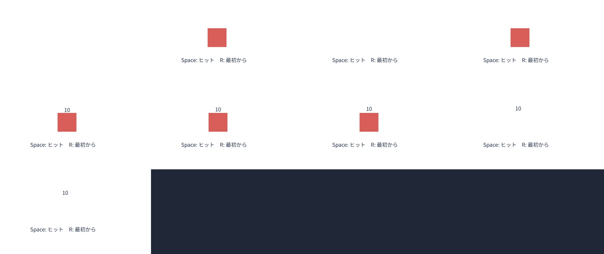
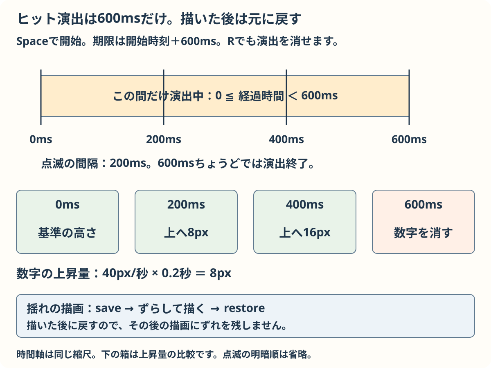

ヒット時の演出を作る
始める前に
ZIPを展開してできたフォルダーでindex.htmlを開きます。ZIPにはひな型の3ファイルが入っています。
WindowsでZIPを展開する（動画）
準備と操作を参考に、作業用フォルダーを用意します。この教材ではそのフォルダーの script.js を編集し、保存後に同じフォルダーの index.html を開くか再読み込みします。
ステップ 1：Spaceで600msの点滅
このステップの見本を図で見る

このステップの見本
この行を足す前 変わったコードの一例（script.js）
window.addEventListener("keydown", event => {
見本で確かめること
Spaceを押すと箱が点滅し、少しすると元に戻ります。
目標
Spaceで600msの点滅。
予想してみる
600ミリ秒ちょうどは？
答えを確認する
期限に達したので点滅は終わっています。
小さな作業
上から順に作業します。目印を探し、その下のコードを書きます。
演出の時刻を覚える
作業用の script.js の先頭近くで、次の目印のすぐ下に追加します。
目印
const ctx = canvas.getContext("2d");追加するコード
let effectStart, until;let は後で値を変えられる変数を作ります。effectStart は演出の開始時刻、until は終了時刻です。
演出を初期化する
start() から update() の閉じ波括弧までで、次の範囲を置き換えます。
置き換える範囲
function start() {
}
function update() {
}置き換えるコード
function start() {
effectStart = 0; until = 0;
}
function update() {
}= は右の値を左に入れる代入です。開始と終了の時刻を 0 にし、演出が動いていない状態から始めます。
文字の設定をする
draw() の画面を消す行の下で、次の目印のすぐ下に追加します。
目印
ctx.clearRect(0, 0, canvas.width, canvas.height);追加するコード
ctx.fillStyle = "#26334a";
ctx.font = "28px sans-serif";文字の色と大きさを決めます。
演出中かを調べる
文字の設定の下で、次の目印のすぐ下に追加します。
目印
ctx.font = "28px sans-serif";追加するコード
const now = performance.now();
const active = now < until;performance.now() は現在時刻をミリ秒で返します。< はより小さいという意味で、終了時刻より前なら演出中です。
点滅する四角を描く
演出中かを調べる行の下で、次の目印のすぐ下に追加します。
目印
const active = now < until;追加するコード
if (!active || Math.floor((now - effectStart) / 200) % 2 === 0) {
ctx.fillStyle = "#d85e59"; ctx.fillRect(300, 150, 100, 100);
}! は真偽の反転、|| はどちらか一方、=== は同じかの比較です。演出中は開始からの時間を 200 で割り、小数を切り捨てた数の % 2 の余りが 0 のときだけ描きます。演出外は常に描きます。
操作を案内する
四角を描く分岐の下で、次の目印のすぐ下に追加します。
目印
ctx.fillStyle = "#d85e59"; ctx.fillRect(300, 150, 100, 100);
}追加するコード
ctx.fillStyle = "#26334a"; ctx.fillText("Space: ヒット R: 最初から", 160, 330);Space でヒット演出、R で最初から始める操作を表示します。
キー入力を受け取る
draw() の後、gameLoop() の先頭行の前で、次の目印のすぐ上に追加します。
目印
function gameLoop() {追加するコード
window.addEventListener("keydown", event => {
if (event.ctrlKey || event.altKey || event.metaKey || event.isComposing) return;
if (event.code === "Space") event.preventDefault();
if (event.repeat) return;
});keydown はキーを押したときに起きます。修飾キーや日本語入力中、繰り返しを除き、Space のスクロールを防ぎます。
Spaceで演出を始める
キー入力処理の繰り返しを除く行の下で、次の目印のすぐ下に追加します。
目印
if (event.repeat) return;追加するコード
if (event.code === "Space") { effectStart = performance.now(); until = effectStart + 600; }開始時刻を記録し、終了を 600 ミリ秒後にします。Space を再度押すとその時刻から演出をやり直します。
Rで演出を初期化する
Space の判定の下で、次の目印のすぐ下に追加します。
目印
if (event.code === "Space") { effectStart = performance.now(); until = effectStart + 600; }追加するコード
if (event.key.toLowerCase() === "r") start();toLowerCase() で小文字にしたキーが R なら start() を呼びます。
保存して作業用の index.html を再読み込みし、Space を押すと四角が約 0.6 秒点滅し、R で演出が終わることを確かめます。
保存後の確認
保存してゲーム画面を更新する（動画）
index.html を再読み込みします。Spaceを押すと箱が点滅し、少しすると元に戻ります。 この段階の見本を開く
小さな練習
until = effectStart + 600 の600を1000に変え、点滅が1秒続くことを確かめます。600に戻します。
ステップ 2：600msの画面揺れを追加
このステップの見本を図で見る
このステップの見本
この行を足す前 変わったコードの一例（script.js）
if (active) ctx.translate(Math.floor((now - effectStart) / 200) % 2 === 0 ? 5 : -5, 0);
見本で確かめること
Spaceを押すと点滅しながら横に揺れます。
目標
600msの画面揺れを追加。
予想してみる
restoreがないと？
答えを確認する
後で描くものにもずれが残ることがあります。
小さな作業
上から順に作業します。目印を探し、その下のコードを書きます。
描画の設定を保存する
draw() の演出中かを調べる行の下で、次の目印のすぐ下に追加します。
目印
const active = now < until;追加するコード
ctx.save();save() で現在の描画設定を保存します。移動した後に戻すためです。
演出中に描画位置をずらす
save() の下で、次の目印のすぐ下に追加します。
目印
ctx.save();追加するコード
if (active) ctx.translate(Math.floor((now - effectStart) / 200) % 2 === 0 ? 5 : -5, 0);translate はその後の描画位置を移します。演出中は 200 ミリ秒ごとに横へ 5 または -5 ずらします。この見本では -5 の間は点滅で四角が非表示になります。
描画の設定を戻す
点滅する四角の分岐の下で、次の目印のすぐ下に追加します。
目印
ctx.fillStyle = "#d85e59"; ctx.fillRect(300, 150, 100, 100);
}追加するコード
ctx.restore();restore() で保存した設定に戻すので、その後の操作案内はずれません。
保存して再読み込みし、Space を押すと四角が点滅しながら位置をずらし、操作案内はずれないことを確かめます。
保存後の確認
Spaceを押すと点滅しながら横に揺れます。 この段階の見本を開く
小さな練習
ctx.translateの「? 5 : -5」の5を10に変え、一方への揺れが大きくなることを確かめます。5に戻します。
ステップ 3：600msで上へ移動する数字を追加
このステップの見本を図で見る
このステップの見本
この行を足す前 変わったコードの一例（script.js）
ctx.fillStyle = "#26334a"; ctx.fillText("10", 335, 145 - (now - effectStart) * 40 / 1000);
見本で確かめること
Spaceを押すと数字10が上に動き、600ミリ秒で消えます。
目標
600msで上へ移動する数字を追加。
予想してみる
500ミリ秒で数字は何px上がる？
答えを確認する
0.5秒×40pxで20pxです。
小さな作業
上から順に作業します。目印を探し、その下のコードを書きます。
数字を上へ動かす
点滅する四角の分岐と restore() の間で、次の範囲を置き換えます。
置き換える範囲
ctx.fillStyle = "#d85e59"; ctx.fillRect(300, 150, 100, 100);
}
ctx.restore();置き換えるコード
ctx.fillStyle = "#d85e59"; ctx.fillRect(300, 150, 100, 100);
}
if (active) {
ctx.fillStyle = "#26334a"; ctx.fillText("10", 335, 145 - (now - effectStart) * 40 / 1000);
}
ctx.restore();演出中は数字を表示し、経過ミリ秒を秒に変えて 40 を掛けた分だけ縦位置を減らします。1 秒あたり 40 ピクセル上へ動く計算で、演出は 0.6 秒で終わります。

ヒットから600ms未満だけ点滅と揺れと上昇数字を表示する。点滅は200ms間隔。数字は1秒40pxなので200msで8px、400msで16px上がり、600msちょうどで消える。
保存して再読み込みし、Space を押すと数字 10 が上へ移動して消えることを確かめます。
保存後の確認
Spaceを押すと数字10が上に動き、600ミリ秒で消えます。Rで消せます。 この段階の見本を開く
小さな練習
数字の上昇に使う * 40 / 1000 の40を80に変え、数字がより速く上がることを確かめます。40に戻します。
自分のゲームに組み込むには
effectStart と until を状態に加え、命中時に期限を設定します。世界の描画を save() と restore() で囲み、得点などの画面表示は元に戻した後に描きます。
見本の状態、入力、更新、描画を自分のゲームの名前に合わせて移します。すでにある start()、update()、draw() に必要な部分を加え、ゲームループは増やしません。やり直すときは追加した状態も初期化してください。
操作：Space:ヒット、R:初期状態。